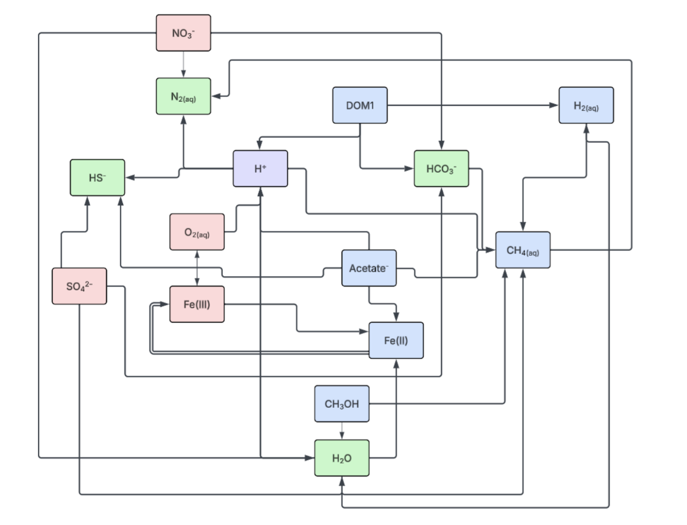
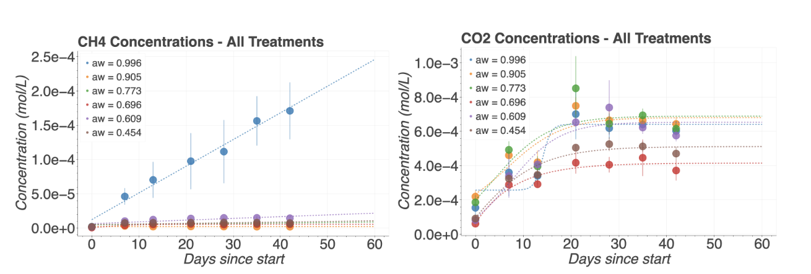
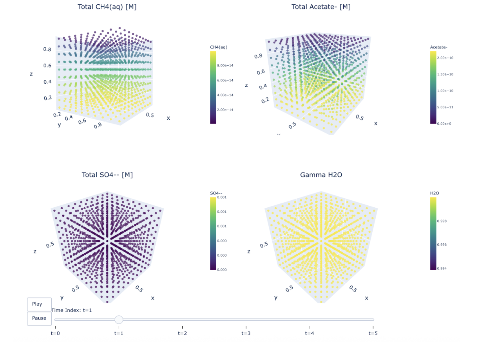
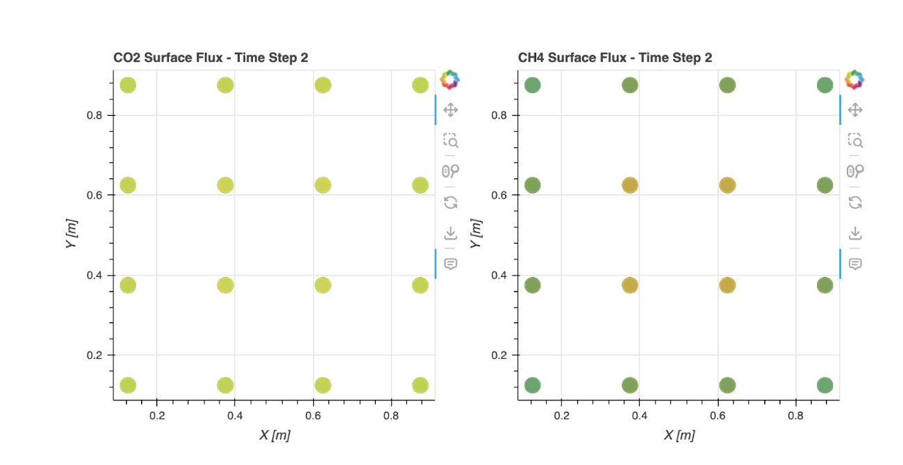
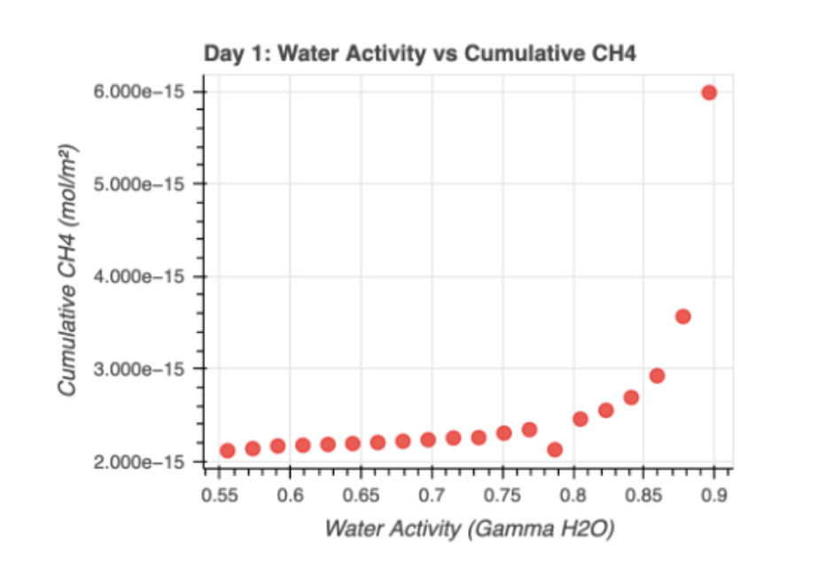

pflotran-py: A Python Wrapper for Generating PFLOTRAN Input Files and Processing Simulation Results
Sanskriti Shindadkar1 and Madison Dunitz2
1Department of Bioengineering, University of California, Berkeley
2California Institute of Technology
Begun during SURF @ Caltech · Mentored by Madison Dunitz
1. Summary
Reactive transport models represent a variety of environmental conditions and areas of scientific inquiry. From nuclear waste to wastewater runoff, many scientific problems can be modeled as a combination of metabolic or chemical reactions and physical transport over varying timescales and environmental conditions. PFLOTRAN is a Fortran-based software package that allows users to model and test a variety of environmental conditions, reactions, and transport processes in a highly parallelized way.
To make the software accessible to a wider range of scientific users, we created a Python module that generates custom Fortran input files compatible with PFLOTRAN. Our package allows users to generate files representing environment- and experiment-specific conditions, incorporate custom sandbox reactions, and process simulation outputs using integrated visualization tools.
To support our own research, we have applied the package to generate PFLOTRAN input files for modeling methanogenic carbon flux and estimating the sequestration potential of bio-based carbon capture and sequestration systems. Model outputs were then compared with results from our experimental work.
2. Statement of Need
Transport-flow reaction models that allow modeling over decadal or century-scale timescales are essential for extrapolating laboratory results to long-term environmental effects. For example, understanding the long-term potential of carbon sequestration solutions requires modeling processes such as methanogenesis and the release of CO2 from sequestered carbon.
Other potential applications include modeling the status of stored nuclear waste over millennia, radionuclide transport, and optimizing wastewater management to prevent contaminant transport into the environment.
Historically, PFLOTRAN has been used to investigate approaches for detecting CO2 leakage in aquifers and to reproduce environmental conditions in salt-marsh systems in order to examine their effects on biogeochemical processes.1 PFLOTRAN has also been integrated into other modeling frameworks, including dfnWorks, a computational framework for generating three-dimensional discrete fracture networks, and used to simulate flow and transport in fractured media.
3. State of the Field
Although many scientific projects require flow-transport reaction models, relatively few modular frameworks allow researchers to easily configure and run reactive transport simulations tailored to their own experimental conditions. Such simulations can extend wet-laboratory research into conditions that may be difficult or impractical to validate experimentally—including rainfall, different soil porosities, changing environmental conditions, or decadal-scale timeframes.
PFLOTRAN, a parallel subsurface flow and reactive transport simulator implemented primarily in Fortran, can simulate these systems using customizable reactions, initial conditions, and constraints. However, configuring PFLOTRAN can present a substantial learning curve for researchers unfamiliar with its input-file structure or with Fortran-based scientific software. Users may need to manually define species and reactions and inspect example input files to determine how individual parameters should be changed.
A Python wrapper that generates experiment-specific input files and provides a convenient interface for running and analyzing simulations can therefore make PFLOTRAN-based reactive transport modeling more accessible across scientific fields.
4. Software Design
We present an integrated workflow for PFLOTRAN focused on saline-sediment microbial redox modeling, with an emphasis on the inhibition of methanogenesis. Through development for our own research, we iteratively updated and refactored the software to ensure that the repository correctly interfaces with PFLOTRAN while reducing the amount of direct PFLOTRAN configuration required from the user.
The software includes three configurable methanogenesis pathways and additional constraints for water-activity inhibition. The overall workflow is designed so that users can modify experimental parameters in a central configuration file, allowing the same framework to represent simulations ranging from several days to several centuries and across different initial concentrations, salinity conditions, and inhibition parameters.
While the default workflow generates input files that sweep over different salinity concentrations, the sweep parameters can be modified by the user—for example, over the concentration of a particular ion or over surface area.

Main features
| Feature | Purpose |
|---|---|
| Template and parameter separation | Parameter values are stored in pflotran_generator.py, allowing users to modify experimental variables without manually searching through a large PFLOTRAN input file. |
| Sandbox extensibility | Includes water-activity inhibition of methanogenesis and a customizable structure for implementing additional reactions beyond PFLOTRAN’s built-in kinetics. |
| Post-processing | Converts species concentrations across the simulation grid into concentration fields, gradients, diffusive-flux estimates, and time-series visualizations (including interactive Bokeh and Plotly options). |
| Parameter-sweep generation | create_modified_files.py generates variations of a base PFLOTRAN input file at different salinity levels, and can be modified to sweep other parameters. |
| Batch execution | run_pflotran_batch.sh runs multiple .in files sequentially with logging for batched experiments and systematic comparisons. |
| Output-format switching | Both .tec and HDF5 outputs are supported—HDF5 for compact storage of larger simulations, .tec for debugging and smaller visualization workflows. |
Updated hanford.dat |
Includes species required by the modeled reaction network that are not present in the default PFLOTRAN database. |
| Jupyter notebooks | Configurable notebooks for generating convenient versions of input data files and visualizations. |
5. Research Impact
The software is being used by the authors to model a novel approach for scalable carbon capture. Algae and other halophilic photo-autotrophs are grown to sequester carbon as biomass and subsequently stored underground in a high-salt environment. Release of the stored carbon via respiration or methanogenesis could reduce the amount of carbon retained—or reverse the project’s impact on warming.
The software allows researchers to estimate the long-term consequences of carbon flux over hundreds of years under conditions that are difficult to reproduce experimentally, including changes in water activity, sulfate concentration, surface-area-to-volume ratio, and rainfall.
The implementation includes three primary methanogenesis pathways: hydrogenotrophic methanogenesis, in which CO2 is reduced using H2; acetoclastic methanogenesis, in which acetate is converted to CH4 and inorganic carbon; and methylotrophic methanogenesis, in which methylated compounds such as methanol contribute to methane production.2
The experimental comparisons below evaluate model predictions using experiments separate from those used for selected parameter tuning. Although selected parameters were tuned using other experiments, including chloride-concentration experiments, the PFLOTRAN-based predictions reproduce the approximate trends and magnitudes observed experimentally.




6. AI Usage Disclosure
Generative AI tools, including Codex and Claude Code, and AI-enabled development environments such as Cursor were used during software implementation, code review, and refactoring. The authors have reviewed, verified, and validated the resulting code.
7. Acknowledgements
The authors would like to thank the Orphan Lab and the Sessions Lab for their mentorship and support, as well as O’Meara and Glenn for their support and feedback. Sanskriti additionally thanks fellow SURF fellows and mentors at Caltech.
8. References
- O'Meara, T. A., Yuan, F., Sulman, B. N., Noyce, G. L., Rich, R., Thornton, P. E., & Megonigal, J. P. (2024). Developing a redox network for coastal saltmarsh systems in the PFLOTRAN reaction model. Journal of Geophysical Research: Biogeosciences, 129(3), Article e2023JG007633. https://doi.org/10.1029/2023JG007633
- Sela-Adler, M., Ronen, Z., Herut, B., Antler, G., Vigderovich, H., Eckert, W., & Sivan, O. (2017). Co-existence of methanogenesis and sulfate reduction with common substrates in sulfate-rich estuarine sediments. Frontiers in Microbiology, 8, 766. https://doi.org/10.3389/fmicb.2017.00766